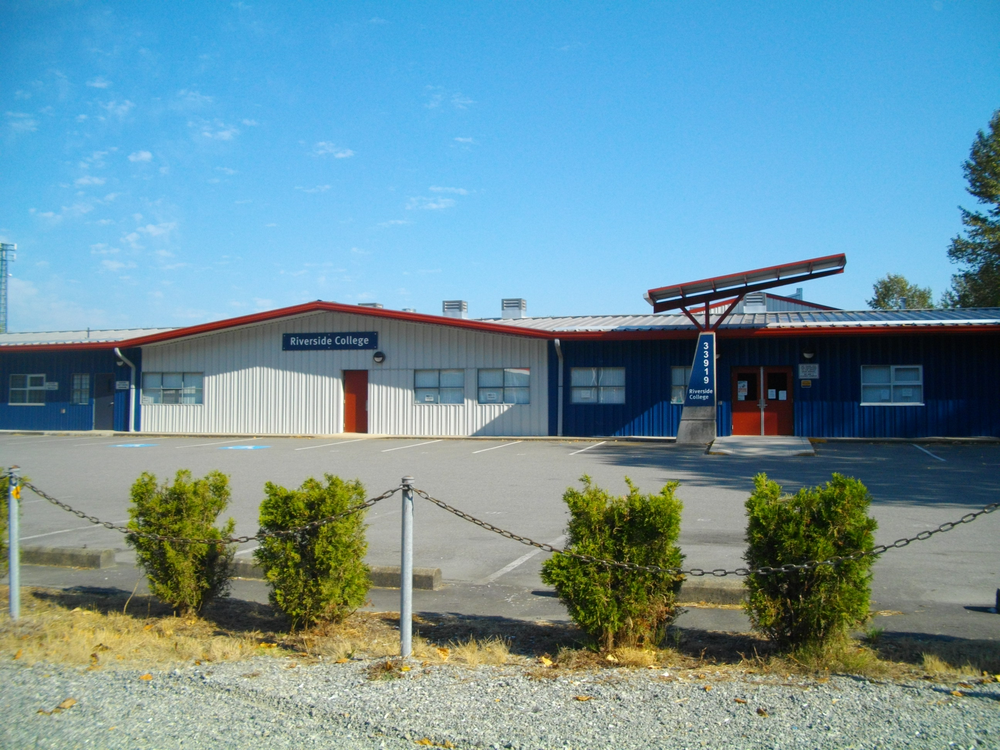

Riverside College is a post-secondary institution on Dewdney Trunk Rd. and Stave Lake Rd. close to the city hall. It's a trades school so you go there to learn how to do various trades like automotives, plumbing, carpentry, hairstyling and other things in the trades industry.
I arrived at the college late because we had to request a third bus for transport as only two didn't fit all of the kids. When I got there we were somewhat rushed into the building because there wasn't a lot of time for the tour(we were actually cut short). We first were escorted by some senior students(I think) to the hairstyling area/salon area and we were told about what the students do, and what they teach in that area. After we were done in the Salon we were escorted into the area for makeup and nails, I didn't catch much on what it was about and then we walked outside to the automotive area. There was some cars which I believe the students brought in to work on, and there was probably some demo cars as well to quickly demonstrate certain techniques to the students. I believe this was the more interesting portion of the tour because it was outside and there was actually stuff with mechanisms going on other than just a room with some materials/tools. Then we went back inside after a short period of waiting for something(nobody really told us) and then we were shown a small room and inside someone explained to us some topic but I cannot for the life of me remember what it was about. We then moved into the plumbing room which actually was somewhat interesting because there was some testing pipes and various things there, and of course the best part was when someone turned on a blowtorch. We moved onto the carpentry portion of the school which surprisingly is smaller than Heritage Park's woodwork room. We were told about what you could do in carpentry and all that wonderful information. Then we kind of were rushed to the entrance of the school in a somewhat maze-like fashion. We got on the bus and headed back to the school because we were now cutting into our lunchtime.
The staff and students over at riverside were nice but the information presented to me is only so helpful when I'm not going into any major trades that were featured in our tour.
